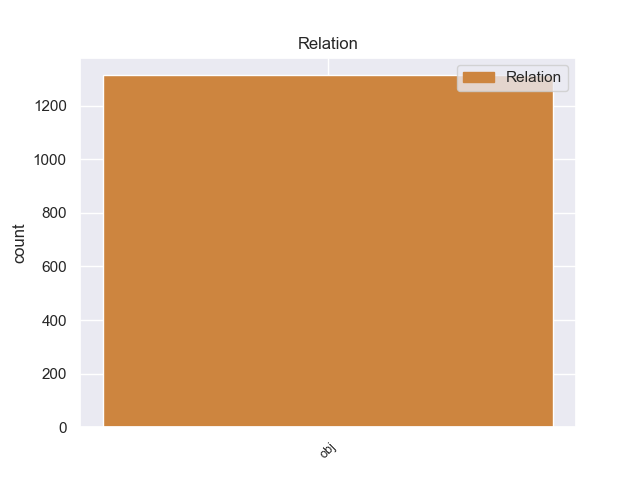
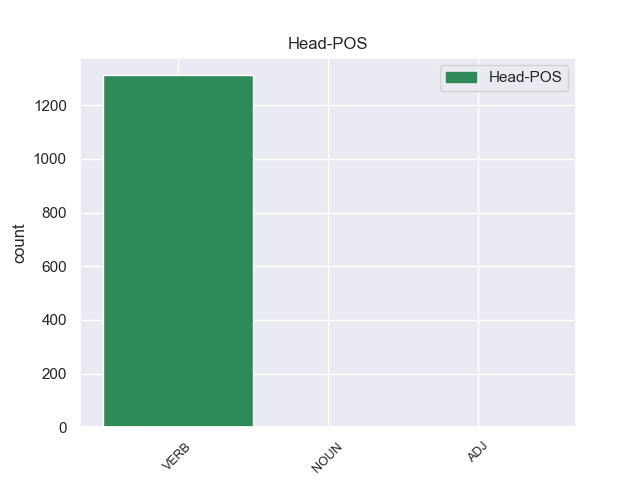
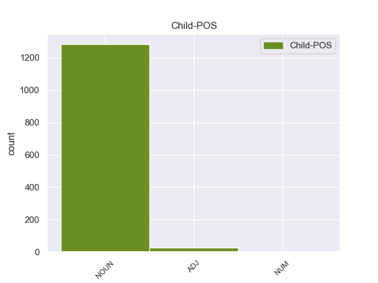

Distribution of features within this leaf



Morphosyntax Rules sorted by frequency.
- When the dependent token is the object(obj) of the head token, and the head token is VERB and the dependent token is NOUN, the Gender needs to be Fem.
1 Υπ' _ _ _ _ 0 _ _ _
2 αυτές _ _ _ _ 0 _ _ _
3 τις _ _ _ _ 0 _ _ _
4 συνθήκες _ _ _ _ 0 _ _ _
5 , _ _ _ _ 0 _ _ _
6 η _ _ _ _ 0 _ _ _
7 Επιτροπή _ _ _ _ 0 _ _ _
8 Νομικών _ _ _ _ 0 _ _ _
9 Θεμάτων _ _ _ _ 0 _ _ _
10 , _ _ _ _ 0 _ _ _
11 της _ _ _ _ 0 _ _ _
12 οποίας _ _ _ _ 0 _ _ _
13 τη _ _ _ _ 0 _ _ _
14 θέση _ _ _ _ 0 _ _ _
15 αποδέχομαι _ _ _ _ 0 _ _ _
16 πλήρως _ _ _ _ 0 _ _ _
17 , _ _ _ _ 0 _ _ _
18 προτείνει προτείνω VERB VERB Aspect=Imp|Mood=Ind|Number=Sing|Person=3|Tense=Pres|VerbForm=Fin|Voice=Act 0 _ _ _
19 την _ _ _ _ 0 _ _ _
20 απόρριψη απόρριψη NOUN NOUN Case=Acc|Gender=Fem|Number=Sing 18 obj _ _
21 της _ _ _ _ 0 _ _ _
22 αίτησης _ _ _ _ 0 _ _ _
23 άρσης _ _ _ _ 0 _ _ _
24 της _ _ _ _ 0 _ _ _
25 βουλευτικής _ _ _ _ 0 _ _ _
26 ασυλίας _ _ _ _ 0 _ _ _
27 την _ _ _ _ 0 _ _ _
28 οποία _ _ _ _ 0 _ _ _
29 υπέβαλε _ _ _ _ 0 _ _ _
30 το _ _ _ _ 0 _ _ _
31 γαλλικό _ _ _ _ 0 _ _ _
32 Υπουργείο _ _ _ _ 0 _ _ _
33 Δικαιοσύνης _ _ _ _ 0 _ _ _
34 , _ _ _ _ 0 _ _ _
35 σ _ _ _ _ 0 _ _ _
36 τη _ _ _ _ 0 _ _ _
37 μορφή _ _ _ _ 0 _ _ _
38 υπό _ _ _ _ 0 _ _ _
39 την _ _ _ _ 0 _ _ _
40 οποία _ _ _ _ 0 _ _ _
41 υποβλήθηκε _ _ _ _ 0 _ _ _
42 σ _ _ _ _ 0 _ _ _
43 το _ _ _ _ 0 _ _ _
44 Κοινοβούλιο _ _ _ _ 0 _ _ _
45 . _ _ _ _ 0 _ _ _
1 Μετά _ _ _ _ 0 _ _ _
2 την _ _ _ _ 0 _ _ _
3 αναγκαστική _ _ _ _ 0 _ _ _
4 προσγείωση _ _ _ _ 0 _ _ _
5 που _ _ _ _ 0 _ _ _
6 πραγματοποίησε _ _ _ _ 0 _ _ _
7 το _ _ _ _ 0 _ _ _
8 αεροσκάφος _ _ _ _ 0 _ _ _
9 της _ _ _ _ 0 _ _ _
10 " _ _ _ _ 0 _ _ _
11 All _ _ _ _ 0 _ _ _
12 Nippon _ _ _ _ 0 _ _ _
13 " _ _ _ _ 0 _ _ _
14 , _ _ _ _ 0 _ _ _
15 ο _ _ _ _ 0 _ _ _
16 Οσάμου _ _ _ _ 0 _ _ _
17 Σινόμπε _ _ _ _ 0 _ _ _
18 ( _ _ _ _ 0 _ _ _
19 Αντιπρόεδρος _ _ _ _ 0 _ _ _
20 ) _ _ _ _ 0 _ _ _
21 ζήτησε ζητώ VERB VERB Aspect=Perf|Mood=Ind|Number=Sing|Person=3|Tense=Past|VerbForm=Fin|Voice=Act 0 _ _ _
22 συγγνώμη συγγνώμη ADJ ADJ Case=Acc|Gender=Fem|Number=Sing 21 obj _ _
23 από _ _ _ _ 0 _ _ _
24 τους _ _ _ _ 0 _ _ _
25 επιβάτες _ _ _ _ 0 _ _ _
26 σε _ _ _ _ 0 _ _ _
27 συνέντευξη _ _ _ _ 0 _ _ _
28 τύπου _ _ _ _ 0 _ _ _
29 που _ _ _ _ 0 _ _ _
30 παραχώρησε _ _ _ _ 0 _ _ _
31 από _ _ _ _ 0 _ _ _
32 το _ _ _ _ 0 _ _ _
33 Τόκυο _ _ _ _ 0 _ _ _
34 . _ _ _ _ 0 _ _ _
1 Τελικά _ _ _ _ 0 _ _ _
2 όμως _ _ _ _ 0 _ _ _
3 το _ _ _ _ 0 _ _ _
4 1942 _ _ _ _ 0 _ _ _
5 , _ _ _ _ 0 _ _ _
6 ο _ _ _ _ 0 _ _ _
7 Γιόσιπ _ _ _ _ 0 _ _ _
8 Μπροζ _ _ _ _ 0 _ _ _
9 Τίτο _ _ _ _ 0 _ _ _
10 με _ _ _ _ 0 _ _ _
11 διακήρυξή _ _ _ _ 0 _ _ _
12 του _ _ _ _ 0 _ _ _
13 , _ _ _ _ 0 _ _ _
14 αποφάσισε _ _ _ _ 0 _ _ _
15 πως _ _ _ _ 0 _ _ _
16 η _ _ _ _ 0 _ _ _
17 " _ _ _ _ 0 _ _ _
18 Γιουγκοσλαβική _ _ _ _ 0 _ _ _
19 Μακεδονία _ _ _ _ 0 _ _ _
20 " _ _ _ _ 0 _ _ _
21 θα _ _ _ _ 0 _ _ _
22 αποτελούσε αποτελώ VERB VERB Aspect=Imp|Mood=Ind|Number=Sing|Person=3|Tense=Past|VerbForm=Fin|Voice=Act 0 _ _ _
23 μία ένας NUM NUM Case=Acc|Gender=Fem|Number=Sing|NumType=Card 22 obj _ _
24 από _ _ _ _ 0 _ _ _
25 τις _ _ _ _ 0 _ _ _
26 έξι _ _ _ _ 0 _ _ _
27 ομόσπονδες _ _ _ _ 0 _ _ _
28 δημοκρατίες _ _ _ _ 0 _ _ _
29 που _ _ _ _ 0 _ _ _
30 θα _ _ _ _ 0 _ _ _
31 αποτελούσαν _ _ _ _ 0 _ _ _
32 την _ _ _ _ 0 _ _ _
33 ενιαία _ _ _ _ 0 _ _ _
34 Γιουγκοσλαβία _ _ _ _ 0 _ _ _
35 , _ _ _ _ 0 _ _ _
36 ενώ _ _ _ _ 0 _ _ _
37 οι _ _ _ _ 0 _ _ _
38 κάτοικοι _ _ _ _ 0 _ _ _
39 της _ _ _ _ 0 _ _ _
40 περιοχής _ _ _ _ 0 _ _ _
41 θα _ _ _ _ 0 _ _ _
42 αναγνωρίζονταν _ _ _ _ 0 _ _ _
43 ως _ _ _ _ 0 _ _ _
44 μια _ _ _ _ 0 _ _ _
45 νέα _ _ _ _ 0 _ _ _
46 σλαβική _ _ _ _ 0 _ _ _
47 εθνότητα _ _ _ _ 0 _ _ _
48 , _ _ _ _ 0 _ _ _
49 τη _ _ _ _ 0 _ _ _
50 μακεδονική _ _ _ _ 0 _ _ _
51 . _ _ _ _ 0 _ _ _
1 Ως _ _ _ _ 0 _ _ _
2 εκ _ _ _ _ 0 _ _ _
3 τούτου _ _ _ _ 0 _ _ _
4 , _ _ _ _ 0 _ _ _
5 κατά _ _ _ _ 0 _ _ _
6 τη _ _ _ _ 0 _ _ _
7 διάρκεια _ _ _ _ 0 _ _ _
8 της _ _ _ _ 0 _ _ _
9 επίσκεψής _ _ _ _ 0 _ _ _
10 μου _ _ _ _ 0 _ _ _
11 πρότινος _ _ _ _ 0 _ _ _
12 σ _ _ _ _ 0 _ _ _
13 την _ _ _ _ 0 _ _ _
14 Τουρκία _ _ _ _ 0 _ _ _
15 υπογράμμισα _ _ _ _ 0 _ _ _
16 ότι _ _ _ _ 0 _ _ _
17 αναμένουμε _ _ _ _ 0 _ _ _
18 τη _ _ _ _ 0 _ _ _
19 λήψη _ _ _ _ 0 _ _ _
20 ευρύτερων _ _ _ _ 0 _ _ _
21 μέτρων μέτρο NOUN NOUN Case=Gen|Gender=Neut|Number=Plur 0 _ _ _
22 όσον _ _ _ _ 0 _ _ _
23 αφορά _ _ _ _ 0 _ _ _
24 την _ _ _ _ 0 _ _ _
25 ελευθερία ελευθερία NOUN NOUN Case=Acc|Gender=Fem|Number=Sing 21 obj _ _
26 του _ _ _ _ 0 _ _ _
27 συνασπίζεσθαι _ _ _ _ 0 _ _ _
28 , _ _ _ _ 0 _ _ _
29 τη _ _ _ _ 0 _ _ _
30 χρήση _ _ _ _ 0 _ _ _
31 γλωσσών _ _ _ _ 0 _ _ _
32 σ _ _ _ _ 0 _ _ _
33 τη _ _ _ _ 0 _ _ _
34 ραδιοφωνία _ _ _ _ 0 _ _ _
35 , _ _ _ _ 0 _ _ _
36 την _ _ _ _ 0 _ _ _
37 τηλεόραση _ _ _ _ 0 _ _ _
38 και _ _ _ _ 0 _ _ _
39 την _ _ _ _ 0 _ _ _
40 εκπαίδευση _ _ _ _ 0 _ _ _
41 , _ _ _ _ 0 _ _ _
42 την _ _ _ _ 0 _ _ _
43 κατάργηση _ _ _ _ 0 _ _ _
44 της _ _ _ _ 0 _ _ _
45 θανατικής _ _ _ _ 0 _ _ _
46 ποινής _ _ _ _ 0 _ _ _
47 καθώς _ _ _ _ 0 _ _ _
48 και _ _ _ _ 0 _ _ _
49 την _ _ _ _ 0 _ _ _
50 υιοθέτηση _ _ _ _ 0 _ _ _
51 των _ _ _ _ 0 _ _ _
52 αρχών _ _ _ _ 0 _ _ _
53 της _ _ _ _ 0 _ _ _
54 νομικής _ _ _ _ 0 _ _ _
55 προστασίας _ _ _ _ 0 _ _ _
56 αντίστοιχα _ _ _ _ 0 _ _ _
57 με _ _ _ _ 0 _ _ _
58 τη _ _ _ _ 0 _ _ _
59 νομολογία _ _ _ _ 0 _ _ _
60 του _ _ _ _ 0 _ _ _
61 Ευρωπαϊκού _ _ _ _ 0 _ _ _
62 Δικαστηρίου _ _ _ _ 0 _ _ _
63 για _ _ _ _ 0 _ _ _
64 τα _ _ _ _ 0 _ _ _
65 Ανθρώπινα _ _ _ _ 0 _ _ _
66 Δικαιώματα _ _ _ _ 0 _ _ _
67 . _ _ _ _ 0 _ _ _
non-conforming Examples:
1 Σ _ _ _ _ 0 _ _ _
2 το _ _ _ _ 0 _ _ _
3 δεύτερο _ _ _ _ 0 _ _ _
4 ημίχρονο _ _ _ _ 0 _ _ _
5 , _ _ _ _ 0 _ _ _
6 η _ _ _ _ 0 _ _ _
7 Ατλέτικο _ _ _ _ 0 _ _ _
8 πέτυχε πετυχαίνω VERB VERB Aspect=Perf|Mood=Ind|Number=Sing|Person=3|Tense=Past|VerbForm=Fin|Voice=Act 0 _ _ _
9 δύο _ _ _ _ 0 _ _ _
10 τέρματα τέρμα NOUN NOUN Case=Acc|Gender=Neut|Number=Plur 8 obj _ _
11 με _ _ _ _ 0 _ _ _
12 τους _ _ _ _ 0 _ _ _
13 Όσκαρ _ _ _ _ 0 _ _ _
14 ντε _ _ _ _ 0 _ _ _
15 Μάρκος _ _ _ _ 0 _ _ _
16 ( _ _ _ _ 0 _ _ _
17 71ο _ _ _ _ 0 _ _ _
18 λεπτό _ _ _ _ 0 _ _ _
19 ) _ _ _ _ 0 _ _ _
20 και _ _ _ _ 0 _ _ _
21 Ικέρ _ _ _ _ 0 _ _ _
22 Μουνιάιν _ _ _ _ 0 _ _ _
23 ( _ _ _ _ 0 _ _ _
24 90ο _ _ _ _ 0 _ _ _
25 λεπτό _ _ _ _ 0 _ _ _
26 ) _ _ _ _ 0 _ _ _
27 . _ _ _ _ 0 _ _ _
1 Ο _ _ _ _ 0 _ _ _
2 ποταμός _ _ _ _ 0 _ _ _
3 Αχέροντας _ _ _ _ 0 _ _ _
4 αποτελούσε αποτελώ VERB VERB Aspect=Imp|Mood=Ind|Number=Sing|Person=3|Tense=Past|VerbForm=Fin|Voice=Act 0 _ _ _
5 κατά _ _ _ _ 0 _ _ _
6 τη _ _ _ _ 0 _ _ _
7 μυθολογία _ _ _ _ 0 _ _ _
8 το _ _ _ _ 0 _ _ _
9 δρόμο δρόμος NOUN NOUN Case=Acc|Gender=Masc|Number=Sing 4 obj _ _
10 μέσω _ _ _ _ 0 _ _ _
11 του _ _ _ _ 0 _ _ _
12 οποίου _ _ _ _ 0 _ _ _
13 ο _ _ _ _ 0 _ _ _
14 Άδης _ _ _ _ 0 _ _ _
15 μετέφερε _ _ _ _ 0 _ _ _
16 τις _ _ _ _ 0 _ _ _
17 ψυχές _ _ _ _ 0 _ _ _
18 σ _ _ _ _ 0 _ _ _
19 το _ _ _ _ 0 _ _ _
20 βασίλειό _ _ _ _ 0 _ _ _
21 του _ _ _ _ 0 _ _ _
22 , _ _ _ _ 0 _ _ _
23 σ _ _ _ _ 0 _ _ _
24 τη _ _ _ _ 0 _ _ _
25 λίμνη _ _ _ _ 0 _ _ _
26 Αχερουσία _ _ _ _ 0 _ _ _
27 . _ _ _ _ 0 _ _ _
1 σε _ _ _ _ 0 _ _ _
2 άλλες _ _ _ _ 0 _ _ _
3 πλευρές _ _ _ _ 0 _ _ _
4 ο _ _ _ _ 0 _ _ _
5 ποταμός _ _ _ _ 0 _ _ _
6 κυλά _ _ _ _ 0 _ _ _
7 από _ _ _ _ 0 _ _ _
8 ψηλούς _ _ _ _ 0 _ _ _
9 βράχους _ _ _ _ 0 _ _ _
10 - _ _ _ _ 0 _ _ _
11 μερικές _ _ _ _ 0 _ _ _
12 φορές _ _ _ _ 0 _ _ _
13 φτάνει φτάνω VERB VERB Aspect=Imp|Mood=Ind|Number=Sing|Person=3|Tense=Pres|VerbForm=Fin|Voice=Act 0 _ _ _
14 τα _ _ _ _ 0 _ _ _
15 εκατό _ _ _ _ 0 _ _ _
16 μέτρα μέτρο NOUN NOUN Case=Acc|Gender=Neut|Number=Plur 13 obj _ _
17 - _ _ _ _ 0 _ _ _
18 και _ _ _ _ 0 _ _ _
19 το _ _ _ _ 0 _ _ _
20 πλάτος _ _ _ _ 0 _ _ _
21 του _ _ _ _ 0 _ _ _
22 φτάνει _ _ _ _ 0 _ _ _
23 τα _ _ _ _ 0 _ _ _
24 δύο _ _ _ _ 0 _ _ _
25 μέτρα _ _ _ _ 0 _ _ _
26 . _ _ _ _ 0 _ _ _
1 σε _ _ _ _ 0 _ _ _
2 άλλες _ _ _ _ 0 _ _ _
3 πλευρές _ _ _ _ 0 _ _ _
4 ο _ _ _ _ 0 _ _ _
5 ποταμός _ _ _ _ 0 _ _ _
6 κυλά _ _ _ _ 0 _ _ _
7 από _ _ _ _ 0 _ _ _
8 ψηλούς _ _ _ _ 0 _ _ _
9 βράχους _ _ _ _ 0 _ _ _
10 - _ _ _ _ 0 _ _ _
11 μερικές _ _ _ _ 0 _ _ _
12 φορές _ _ _ _ 0 _ _ _
13 φτάνει _ _ _ _ 0 _ _ _
14 τα _ _ _ _ 0 _ _ _
15 εκατό _ _ _ _ 0 _ _ _
16 μέτρα _ _ _ _ 0 _ _ _
17 - _ _ _ _ 0 _ _ _
18 και _ _ _ _ 0 _ _ _
19 το _ _ _ _ 0 _ _ _
20 πλάτος _ _ _ _ 0 _ _ _
21 του _ _ _ _ 0 _ _ _
22 φτάνει φτάνω VERB VERB Aspect=Imp|Mood=Ind|Number=Sing|Person=3|Tense=Pres|VerbForm=Fin|Voice=Act 0 _ _ _
23 τα _ _ _ _ 0 _ _ _
24 δύο _ _ _ _ 0 _ _ _
25 μέτρα μέτρο NOUN NOUN Case=Acc|Gender=Neut|Number=Plur 22 obj _ SpaceAfter=No
26 . _ _ _ _ 0 _ _ _
1 Οι _ _ _ _ 0 _ _ _
2 διαδηλώσεις _ _ _ _ 0 _ _ _
3 διεξήχθησαν _ _ _ _ 0 _ _ _
4 σ _ _ _ _ 0 _ _ _
5 τη _ _ _ _ 0 _ _ _
6 Φαλούτζα _ _ _ _ 0 _ _ _
7 , _ _ _ _ 0 _ _ _
8 εξήντα _ _ _ _ 0 _ _ _
9 χιλιόμετρα _ _ _ _ 0 _ _ _
10 δυτικά _ _ _ _ 0 _ _ _
11 της _ _ _ _ 0 _ _ _
12 Βαγδάτης _ _ _ _ 0 _ _ _
13 , _ _ _ _ 0 _ _ _
14 όταν _ _ _ _ 0 _ _ _
15 οι _ _ _ _ 0 _ _ _
16 διαδηλωτές _ _ _ _ 0 _ _ _
17 , _ _ _ _ 0 _ _ _
18 οι _ _ _ _ 0 _ _ _
19 οποίοι _ _ _ _ 0 _ _ _
20 ανήκουν _ _ _ _ 0 _ _ _
21 σ _ _ _ _ 0 _ _ _
22 τη _ _ _ _ 0 _ _ _
23 μειονότητα _ _ _ _ 0 _ _ _
24 των _ _ _ _ 0 _ _ _
25 Σουνιτών _ _ _ _ 0 _ _ _
26 , _ _ _ _ 0 _ _ _
27 επιτέθηκαν _ _ _ _ 0 _ _ _
28 με _ _ _ _ 0 _ _ _
29 πέτρες _ _ _ _ 0 _ _ _
30 σ _ _ _ _ 0 _ _ _
31 τους _ _ _ _ 0 _ _ _
32 στρατιώτες _ _ _ _ 0 _ _ _
33 , _ _ _ _ 0 _ _ _
34 οι _ _ _ _ 0 _ _ _
35 οποίοι _ _ _ _ 0 _ _ _
36 με _ _ _ _ 0 _ _ _
37 τη _ _ _ _ 0 _ _ _
38 σειρά _ _ _ _ 0 _ _ _
39 τους _ _ _ _ 0 _ _ _
40 άνοιξαν ανοίγω VERB VERB Aspect=Perf|Mood=Ind|Number=Plur|Person=3|Tense=Past|VerbForm=Fin|Voice=Act 0 _ _ _
41 πυρ πυρ NOUN NOUN Case=Acc|Gender=Neut|Number=Sing 40 obj _ SpaceAfter=No
42 , _ _ _ _ 0 _ _ _
43 με _ _ _ _ 0 _ _ _
44 αποτέλεσμα _ _ _ _ 0 _ _ _
45 πέντε _ _ _ _ 0 _ _ _
46 άτομα _ _ _ _ 0 _ _ _
47 να _ _ _ _ 0 _ _ _
48 χάσουν _ _ _ _ 0 _ _ _
49 τη _ _ _ _ 0 _ _ _
50 ζωή _ _ _ _ 0 _ _ _
51 τους _ _ _ _ 0 _ _ _
52 και _ _ _ _ 0 _ _ _
53 άλλα _ _ _ _ 0 _ _ _
54 είκοσι _ _ _ _ 0 _ _ _
55 να _ _ _ _ 0 _ _ _
56 τραυματιστούν _ _ _ _ 0 _ _ _
57 . _ _ _ _ 0 _ _ _